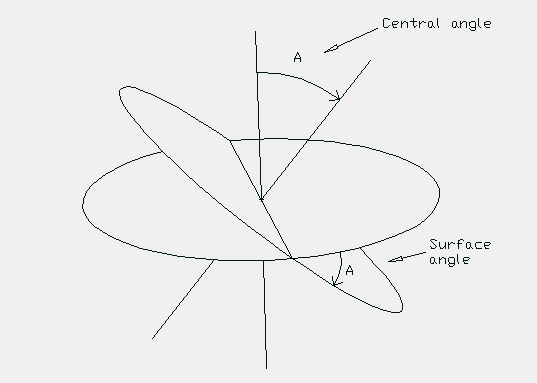

In Synergetics, Fuller refers to the great circles associated with polyhedra as "railroad tracks of energy". The great circles are defined by spinning the polyhedron about an axis. The spinning polyhedron's "equator" defines a great circle. By spinning the polyhedron about all its vertex to vertex, mid-edge to mid-edge and face-center to face-center axis you can generate all the polyhedron's primary great circles. Secondary great circles are generated by using the intersection points of two great circles as new "secondary" axis about which the polyhedron is spun.
The various intersecting great circle patterns on the spherical suface result in the creation of many spherical triangles. When the Vector Equilibrium (cuboctahedron) is used as the polyhedron to be spun a common spherical triangle (and its mirror image triangle) can be seen to cover the entire surface of the sphere. Such a spherical triangle (with its mirror image triangle) Fuller called an LCD (Lowest Common Dinominator) triangle. A diffferent LCD spherical triangle is generated when the Icosahedron is used as the polyhedron to be spun.
The "Appendix of Tables" in Synergetics 2 lists all the angles associated with LCD spherical triangles generated by the primary and secondary great circles of the Vector Equilibrium (the cuboctahedron), the Icosahedron and the combined VE and Icosa. (Tables of the primary great circle angles are located elsewhere in the Synergetics books.) This data was originally calculated by Christopher Kitrick and Robert Grip for R. B. Fuller. As part of my desire to learn Synergetics and to check that the tables did not contain any errors/misprints, I calculated this data myself. (I found a couple of errors/misprints which I correct in the tables below.)
Fuller made comments to the effect that all geodesic dome (angles? chord factors?) are contained in these tables. (Wish I had the reference for this statement at hand. I can't find it at the moment so don't take this comment too seriously.) I can see how the equations and methods used to calculate this data (spherical trig.) is used in the same way to calculate data for domes, but I don't see how all dome info can be obtained for the tables. (Probably I am just remembering the comment incorrectly.)
For those of you intersested in finding a connection with Quantum Mechanics, I have found that some of the great circle angular data corresponds to an equation in quantum mechanics. Select the Quantum mechanics option below for further details.
A Connection to Quantum Mechanics?
Combo VE & Icosa Primary Great Circles
By the way, while I have your attention, here is an picture I did which explains, at lest to me, how a central angle becomes a surface angle and a surface angle becomes a central angle.
Usage Note: My work is copyrighted. You may use my work but you may not include my work, or parts of it, in ant for-profit project without my consent.